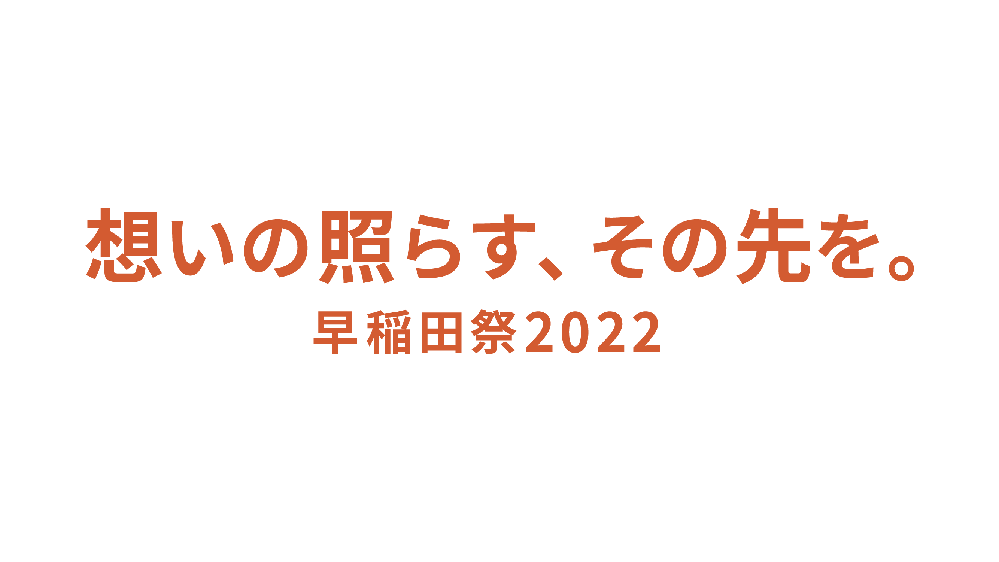

概要
昨年は新型コロナウイルスの影響により、オンライン配信とオフライン開催を併用した史上初のハイブリッド開催となった早稲田祭。今年は11月5日(土)、6日(日)に開催することが決定いたしました。3年ぶりとなる本格的な対面開催に向け、準備を進めています。
※今後の感染状況に応じて開催形態を変更する場合がございます。
【名称】
早稲田祭2022
【主催】
早稲田祭2022運営スタッフ
【日程】
2022年11月5日(土)、6日(日)
【開催場所・プラットフォーム】
早稲田大学 早稲田キャンパス、戸山キャンパス、周辺地域、早稲田祭2022公式サイト
【公式Twitter】
@wasedasai
【公式Facebook】
@wasedasai
【公式Instagram】
@wasedasai
【公式YouTubeチャンネル】
http://www.youtube.com/user/WasedasaiOfficial/about
【公式TikTok】
@wasedasai
【公式マスコットキャラクター「わせだサイくん」公式Twitter】
@wasedasai_kun
【お問い合わせ先】
主催：早稲田祭2022運営スタッフ
担当者：原功樹
TEL：080-6256-0195
E-mail：media@wasedasai.net
テーマについて
キャッチコピー

魅せられ、惹きつけられた「何か」への想い。
この2年間、時にぶつかり、時に合わさり、私たちを繋ぎ止めていたものです。
早稲田祭2022は、原点。
この場所から、早大生の力強く、あたたかい想いが太陽のように広がる。
そして、あなたを一歩先へと導く活力になるように。「想いの照らす、その先を。」
ロゴ
コンセプトは「力強い想い、力強い広がり」。
中心にあるのは早稲田。あふれんばかりの想いが広がる様子を表現しています。
「太陽」のモチーフによって照らされるその先を、ふぞろいで立体的な円錐や円によって想いの広がりやその多様性を表現しました。
濃いオレンジは強く広がる「想い」、薄いオレンジは想いが照らしている「可能性」、薄い黄色は早稲田祭の後に見える「その先」を意識し、連続性や重厚感を表現しています。